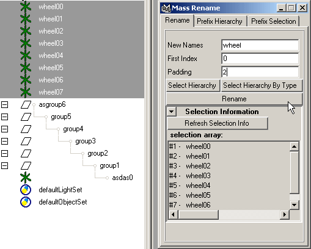
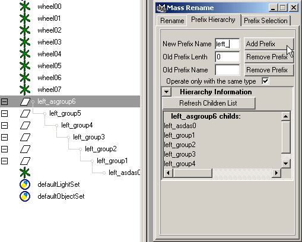
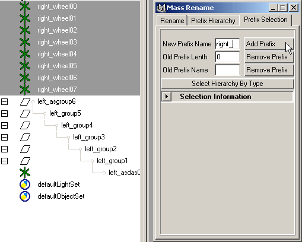

|
|
|
Mass Rename.
Mass rename window allows automatically rename multiply objects:
|  |
Give selected objects the same name with index (counter) . |
|  |
Prefix Hierarchy. "Add Prefix" - add given prefix. "Operate only with the same type" - rename objects only if they are the same type with selected root object. |
|  |
Prefix Selection. "Add Prefix" - add given prefix. |
| SourceForge.net Project | Раздел на форуме CGTALK.RU |